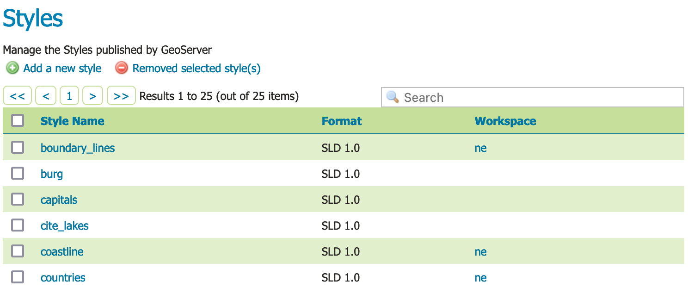
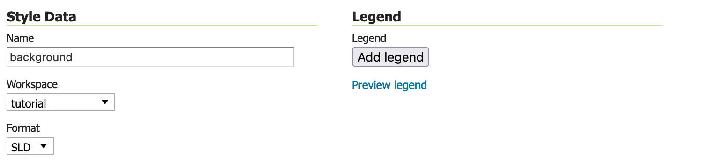
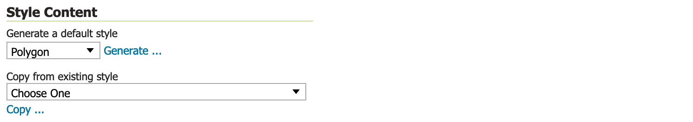
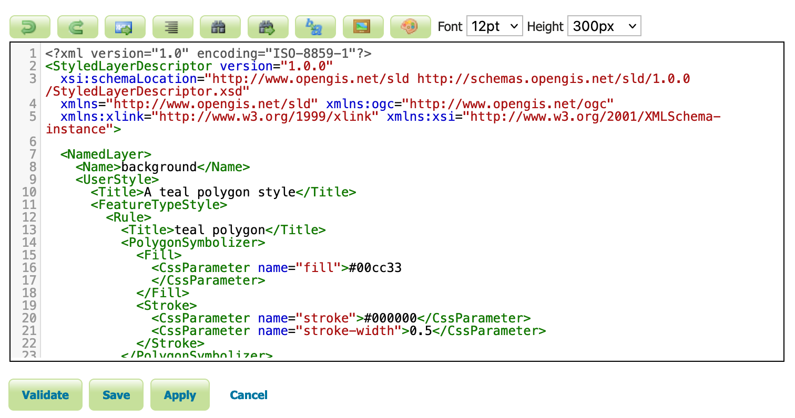
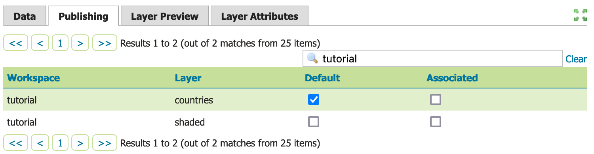
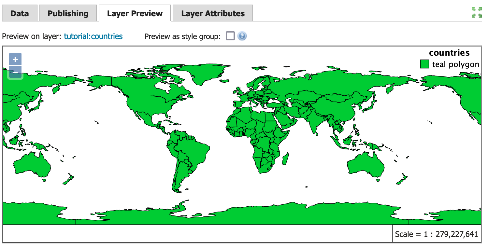
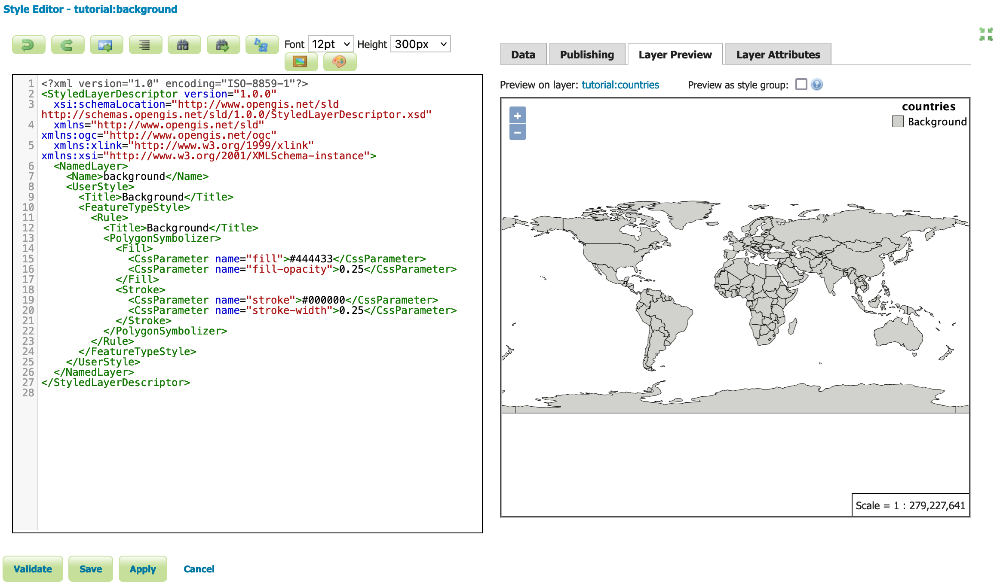
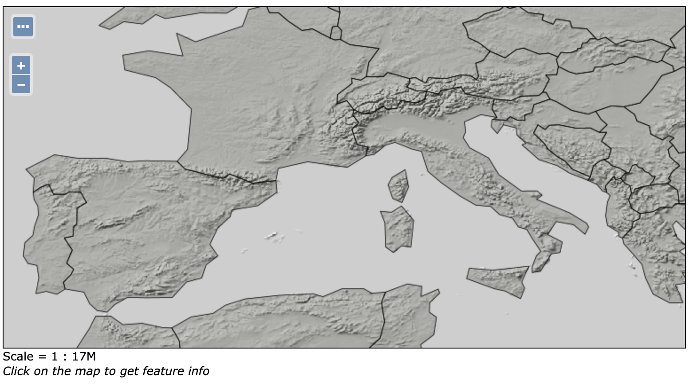

Publishing a style¶
This tutorial walks through the steps of defining a style and associating it with a layer for use.
Note
This tutorial assumes that GeoServer is running at http://localhost:8080/geoserver.
Data preparation¶
First let’s gather that the data that we’ll be publishing.
Complete the previous tutorials:
Publishing a GeoPackage defining the tutorial:countries layer
Publishing a Image defining the tutorial:shaded layer
Publishing a Layer Group defining the tutorial:basemap layer
Create a style¶
Navigate to page.
Styles¶
This page displays a list of styles, including the workspace the style belongs to.
Note
Styles groups are allowed to be “global” allowing a style to be defined that can be used by any layer.
At the top of the list Styles list, locate and click the Add a new style link.
Locate Style Data and define the style:
Name
background
Workspace
tutorialFormat
SLDStyle data¶
Locate Style Content and carefully:
Under Generate a default style select
Polygon
Style Content configured to generate a polygon default style.¶
Under Generate a default style locate and click the Generate link to populate the style editor with a generated outline of a polygion style.
Press the Apply button to define this style.
Now that the style is defined there are more options for interactively working with the style.
Change to Publishing tab.
Use the search to filter with
tutorialto locatetutorial:countries.Select the Default checkbox for
tutorial:countriesto use thetutorial:backgroundstyle the default for this layer.
Style publish¶
Next to Publishing navigate to the Layer Preview tab.
Locate the Preview on layer and click on the link to select
tutorial:countriesas a dataset to use when editing the style.
Styled editor Layer Preview tab¶
Edit your style by inserting
fill-opacityvalue of0.25.<?xml version="1.0" encoding="ISO-8859-1"?> <StyledLayerDescriptor version="1.0.0" xsi:schemaLocation="http://www.opengis.net/sld http://schemas.opengis.net/sld/1.0.0/StyledLayerDescriptor.xsd" xmlns="http://www.opengis.net/sld" xmlns:ogc="http://www.opengis.net/ogc" xmlns:xlink="http://www.w3.org/1999/xlink" xmlns:xsi="http://www.w3.org/2001/XMLSchema-instance"> <NamedLayer> <Name>background</Name> <UserStyle> <Title>Background</Title> <FeatureTypeStyle> <Rule> <Title>Background</Title> <PolygonSymbolizer> <Fill> <CssParameter name="fill">#444433</CssParameter> <CssParameter name="fill-opacity">0.25</CssParameter> </Fill> <Stroke> <CssParameter name="stroke">#000000</CssParameter> <CssParameter name="stroke-width">0.25</CssParameter> </Stroke> </PolygonSymbolizer> </Rule> </FeatureTypeStyle> </UserStyle> </NamedLayer> </StyledLayerDescriptor>
Press Apply to edit your style and check the resulting visual change in the layer preview.
Experiment with:
Updating the title information, watching the displayed legend change
Full screen mode for side-by-side editing
Full screen mode¶
When this style is used as part of the
tutorial::basemapthefill-opacityallows the shaded relief detail to be shown.Basemap with background style applied to countries¶